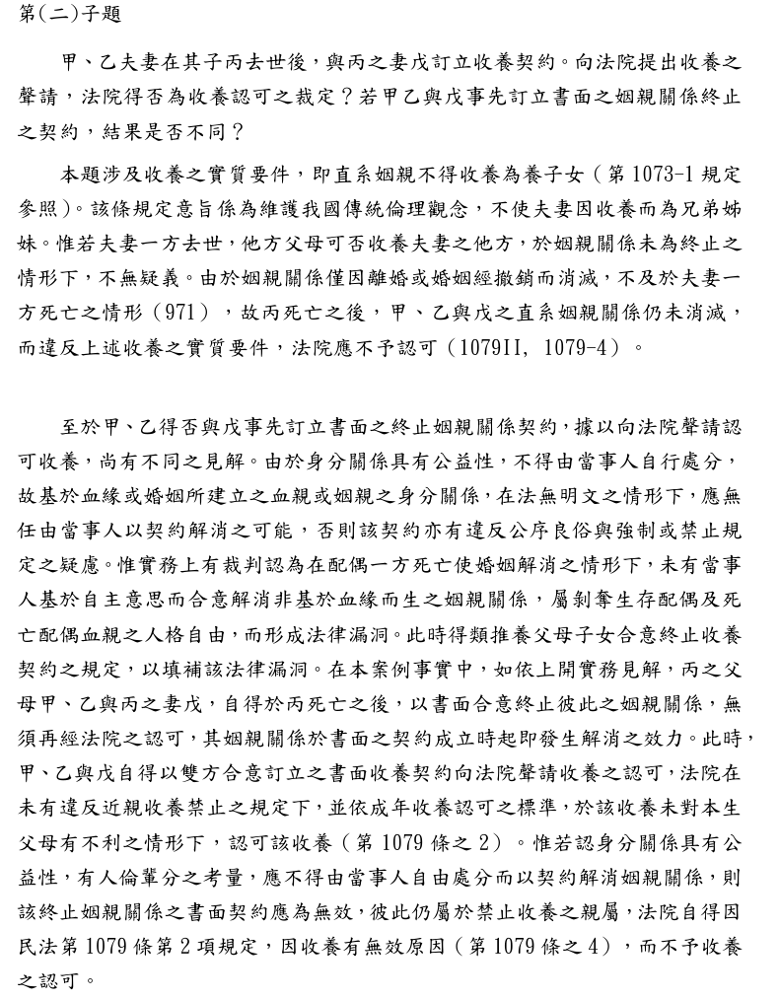
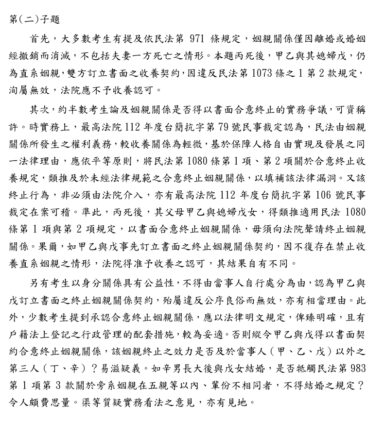

公婆想收養媳婦，法院會准嗎？
114年律師第二試｜民法與民事訴訟法（一）｜第二題第（二）小題（25分）
題目
這一題是親屬繼承題，有三個小題。本頁只做第（二）小題，用得到的事實畫黃色底線。
- （一）丁於辛1歲後與庚分手，而與丙、戊訂立收養契約，單獨將辛出養給丙、戊夫婦，該收養契約是否發生效力？庚得否向法院請求酌定對辛之權利義務行使與負擔？（25分）（本題講義）
- （二）丙因突發心臟病去世，戊仍與甲、乙互相照顧多年，感情深厚。此時甲、乙有意收養戊，雙方訂立書面之收養契約，向法院聲請收養之認可，法院得否為收養認可之裁定？又如甲、乙與戊事先訂立書面之終止姻親關係契約，其結果是否不同？（25分）本頁只做這一題
- （三）甲因丁與庚交往同居生子一事，始終未能釋懷，在一次大吵當中，丁以言語辱罵甲之後，多年沒有來往，至甲重病入院亦始終未為探望，故甲於代筆遺囑中表明不讓丁繼承其財產，見證人亦聽聞此事。未料，該代筆遺囑因欠缺其中一見證人之簽名而無效。若甲、乙於丙死亡後未收養戊，甲死亡後留下遺產新臺幣1,500萬元，應如何繼承？（25分）（本題講義）
影片說明
影片依序示範：主播介紹題目、整題讀一遍再框出第（二）小題、婚後到簽收養契約的故事、關係圖、第1073條之1與第971條逐句畫線、第1079條之4收養無效、兩說、112台簡抗79與第1080條、「終止姻親不用法院、收養仍要法院」的路徑、終止後再檢查一次、三個易錯點，最後把擬答從頭看一遍。
關係圖：戊和甲、乙是什麼關係？
戊是甲、乙兒子的配偶，屬於「血親之配偶」（第969條），親系、親等從丙算（第970條第1款），所以是直系姻親一親等。
本題用到的條文
先看核心四條。原文中畫底線的部分，就是本題用到的那一句。
民法第1073條之1：哪些親屬不能收養
下列親屬不得收養為養子女：一、直系血親。二、直系姻親。但夫妻之一方，收養他方之子女者，不在此限。三、旁系血親在六親等以內及旁系姻親在五親等以內，輩分不相當者。
白話和自己是直系親屬的人（不論是血親還是姻親），不能收養當養子女，免得輩分錯亂。唯一例外是再婚時，收養配偶帶來的孩子。
例子公婆收養媳婦，就是收養直系姻親，不行。但先生收養太太和前夫生的孩子，可以。
民法第971條：姻親關係什麼時候消滅
姻親關係，因離婚而消滅；結婚經撤銷者亦同。
白話姻親關係只在兩種情況下消滅：離婚、結婚被撤銷。配偶死亡不在裡面，所以丈夫過世，太太和公婆還是姻親。74年修法前，「夫死妻再婚」也會讓姻親關係消滅，修法時刪掉了。
例子先生過世多年，太太仍住在公婆家，她和公婆在法律上還是公媳關係；如果當年是離婚，姻親關係就消滅了。
民法第1079條之4（節錄）：違反要件的效果
收養子女，違反……第一千零七十三條之一……之規定者，無效。
白話違反近親收養禁止，收養直接無效，不是只能撤銷。收養無效，法院就應不予認可（第1079條第2項）。
例子公婆和媳婦簽了收養契約送法院，法院會裁定不予認可。
民法第1080條第1項、第2項：合意終止收養（實務類推的基礎）
養父母與養子女之關係，得由雙方合意終止之。前項終止，應以書面為之。養子女為未成年人者，並應向法院聲請認可。
白話收養關係可以雙方同意、寫成書面就終止。實務認為姻親關係比收養更疏遠，配偶死亡後，也應比照這條，讓生存配偶和對方家人可以用書面終止姻親關係。
例子丙過世後，甲、乙和戊簽一份書面「終止姻親關係契約」，依實務見解，簽成就生效，不用再向法院聲請。
其他用到的條文（點開）
民法第969條：什麼是姻親
稱姻親者，謂血親之配偶、配偶之血親及配偶之血親之配偶。
白話因為婚姻而連結起來的親屬。兒子的太太，就是父母的「血親之配偶」。
民法第970條：姻親的親系、親等怎麼算
姻親之親系及親等之計算如左：一、血親之配偶，從其配偶之親系及親等。二、配偶之血親，從其與配偶之親系及親等。三、配偶之血親之配偶，從其與配偶之親系及親等。
白話媳婦跟著丈夫算：丈夫是父母的直系血親一親等，媳婦就是公婆的直系姻親一親等。
民法第1074條：夫妻共同收養
夫妻收養子女時，應共同為之。但有下列各款情形之一者，得單獨收養：一、夫妻之一方收養他方之子女。二、夫妻之一方不能為意思表示或生死不明已逾三年。
白話甲、乙是夫妻，要一起收養戊。本題兩人一起訂約，沒有問題。
民法第1076條之1第1項：被收養人的父母同意
子女被收養時，應得其父母之同意。但有下列各款情形之一者，不在此限：一、父母之一方或雙方對子女未盡保護教養義務或有其他顯然不利子女之情事而拒絕同意。二、父母之一方或雙方事實上不能為意思表示。
白話被收養的人有親生父母，原則上要經他們同意。戊的父母都已過世，沒有同意的問題。
民法第1079條：書面與法院認可
收養應以書面為之，並向法院聲請認可。收養有無效、得撤銷之原因或違反其他法律規定者，法院應不予認可。
白話收養一定要寫書面、送法院認可才成立；有無效原因，法院就不能認可。終止姻親關係不用法院，但收養本身還是要。
民法第1079條之2：成年收養的不認可事由
被收養者為成年人而有下列各款情形之一者，法院應不予收養之認可：一、意圖以收養免除法定義務。二、依其情形，足認收養於其本生父母不利。三、有其他重大事由，足認違反收養目的。
白話收養成年人，法院會多看一層：是不是為了逃避義務、會不會害到親生父母、有沒有違反收養目的。戊和公婆互相照顧多年，父母又已過世，看不出這些情形。
以上條文均依全國法規資料庫現行條文核對（2026-11-13）。
答題地圖
標號層次：一、→（一）→1.。第一行直接寫結論，不再加題號「（二）」。
考選部評分要點與閱卷委員的話
| 評分要點 | 內容 |
|---|---|
| 1. 直系姻親收養禁止 | 第1073條之1禁止直系姻親收養。姻親關係僅因離婚或婚姻撤銷而消滅，不及於夫妻一方死亡（971），丙死亡後甲、乙與戊仍為直系姻親，法院應不予認可（1079Ⅱ、1079-4）。 |
| 2. 書面終止姻親關係 | 有不同見解。一說：身分關係具公益性，不得以契約解消，終止契約無效，仍不予認可。實務：配偶一方死亡後，未有合意解消姻親關係之規定屬法律漏洞，類推合意終止收養規定，書面合意終止、無須法院認可；法院在不違反近親收養禁止下，依成年收養認可標準（1079-2）認可收養。 |

閱卷委員的話：
- 大多數考生有提到第971條，丙死亡後甲、乙與戊仍為直系姻親，違反第1073條之1第2款，無效，法院應不予認可。
- 約半數考生論及書面合意終止姻親關係的實務爭議，可資稱許，並列出112台簡抗79（類推第1080條第1、2項）、112台簡抗106（非必須由法院介入）。
- 另有考生以公益性、公序良俗認終止契約無效，亦有相當理由；少數考生指出應立法明定、戶籍登記配套、終止效力是否及於丁、辛等第三人，以及第983條結婚限制，也有見地。

來源：考選部〈114年司法官、律師考試第二試法律專業科目評分要點及各科目成績統計〉附件第7、8、10頁，已轉成圖片逐頁核對。
擬答
法院應不予認可；如事先以書面合意終止姻親關係，依實務見解，法院得予認可，結果不同。
一、甲、乙得否收養戊
（一）直系姻親不得收養為養子女（民法第1073條之1第2款），同款但書限於夫妻一方收養他方子女，與本件無涉。戊為甲、乙之子丙之配偶，屬直系姻親（第969條、第970條）。
（二）姻親關係僅因離婚或結婚經撤銷而消滅（第971條），不包括配偶一方死亡；74年修法並刪除「夫死妻再婚」之消滅事由。故丙死亡後，甲、乙與戊仍為直系姻親。
（三）縱訂有書面收養契約，依第1079條之4仍屬無效，法院應不予認可（第1079條第2項）。
二、事先書面終止姻親關係
（一）有認為身分關係具公益性，不得由當事人以契約處分，終止契約無效，法院仍應不予認可。
（二）惟實務認為：
1.配偶一方死亡後，如生存配偶與他方血親全無合意終止姻親關係之機會，有違人格自由，係法律漏洞，應類推第1080條第1項、第2項，許以書面合意終止（112台簡抗79）。
2.終止姻親關係無須另向法院聲請裁定（112台簡抗106）；但收養本身仍須法院認可。
（三）本文從實務見解。甲、乙與戊書面終止後，直系姻親關係消滅，不再違反第1073條之1。甲、乙夫妻共同收養（第1074條），戊父母雙亡，無須本生父母同意；如無第1079條之2各款情形，其餘要件亦具備，法院得予認可。
擬答555字（含標題、標點與數字，不含空白，以程式計算）。
字數上限：為什麼是561字
| 項目 | 數字 |
|---|---|
| 本小題可用時間 | 120分鐘 × 25/150 ＝ 20分鐘 |
| 讀題 | 約3分鐘，實際作答約17分鐘 |
| 打字速度 | 一般人中文打字約每分鐘33字（粗估） |
| 上限 | 17分鐘 × 每分鐘約33字 ＝ 561字 |
二是閱卷委員稱許的部分：兩說並陳，實務見解寫出兩則裁定，再回到本題檢查其他收養要件。
互動：三種情況，法院怎麼處理？
同樣是甲、乙收養戊，有沒有先終止姻親關係、採哪一說，結果不同。先自己想想，再點。
為什麼這樣寫
| 寫法 | 理由 |
|---|---|
| 總標題同時回答兩問 | 第一問「不予認可」、第二問「結果不同」，一句寫完。 |
| 一（一）點出但書不適用 | 第1073條之1第2款但書是繼親收養的例外，寫一句排除，顯示有看完整條。 |
| 一（二）寫74年修法 | 說明立法者刪除「夫死妻再婚」，配偶死亡後姻親不消滅不是漏寫；這也是112台簡抗79要處理的背景。本頁取捨 |
| 二（一）先寫否定說 | 評分要點與閱卷委員都認否定說有相當理由，兩說並陳才完整。 |
| 二（二）2. 分開「終止」和「收養認可」 | 終止姻親不用法院，但收養仍須法院認可，避免寫成「簽了終止契約就收養成立」。 |
| 二（三）回頭檢查其他要件 | 成年收養還有第1079條之2；題目特別寫「父母雙亡」，正好用在本生父母同意與「對本生父母不利」的檢查。 |
實務見解
| 字號 | 重點 | 怎麼用 |
|---|---|---|
| 最高法院112年度台簡抗字第79號民事裁定（112年11月15日，案由聲請認可收養子女，原裁定廢棄發回） | 配偶一方死亡後，如謂死亡配偶之血親與生存配偶「全無合意終止本非基於血緣而生姻親關係之機會」，有違人格自由，係立法者疏忽、未預見或情況變更所形成之「法律漏洞」；應類推第1080條第1項、第2項，得以書面合意終止。案情和本題幾乎相同：公婆欲收養亡子之妻，該妻父母雙亡。 | 第二問的主要依據。歷審4筆：地方法院駁回聲請、抗告駁回、本件發回，更審（112年度家聲抗更一字第1號）於113年2月22日撤回抗告。沒有准許收養的終局裁判，只能引其法律見解。 |
| 最高法院112年度台簡抗字第106號民事裁定（112年11月23日，案由聲請終止姻親關係，再抗告駁回） | 同樣認為可類推合意終止收養規定，以書面合意終止姻親關係；但終止是否須由法院介入，屬立法形成，不是漏洞，現行法也沒有向法院聲請終止姻親關係的規定，所以聲請法院終止「於法無據」。 | 說明「終止不用法院」。主文雖駁回，最高法院自己的理由仍肯定書面合意終止；不是採前審「書面終止也無效」的看法。歷審3筆，已確定。 |
兩件都在司法院裁判書系統開全文並核對右側歷審（2026-11-13）。79號（收養認可）與106號（終止姻親）是不同程序，不是同一案的前後審。106號官方全文載有當事人姓名，本頁只以身分稱呼。
預想易錯點
以下是批改前預想的錯誤，還不是學生實際作答的統計。集體批改後，會改成「常見錯誤」並註明人數。
| 可能的錯誤 | 應該怎麼寫 |
|---|---|
| 以為丈夫過世，姻親關係就消滅，所以可以收養 | 第971條只列離婚、結婚經撤銷；配偶死亡不在其中。 |
| 以為終止姻親關係要向法院聲請裁定 | 依112台簡抗106，書面合意即可，不必法院介入。 |
| 以為簽了終止契約，收養就成立 | 收養仍要書面並向法院聲請認可（第1079條第1項），法院還要審查第1079條之2。 |
| 只寫實務見解，沒提否定說 | 評分要點兩說並列，閱卷委員也認否定說有相當理由。 |
| 把第1073條之1第2款但書套到本題 | 但書只適用夫妻一方收養他方子女，公婆收養媳婦不適用。 |
延伸思考
參考資料
歡迎指正
相關連結
民法講義總覽 同一題第（一）小題：爸爸不知道的收養，有效嗎？ 同一題第（三）小題：遺囑無效，「不讓女兒繼承」還算數嗎？ GitHub 原始檔